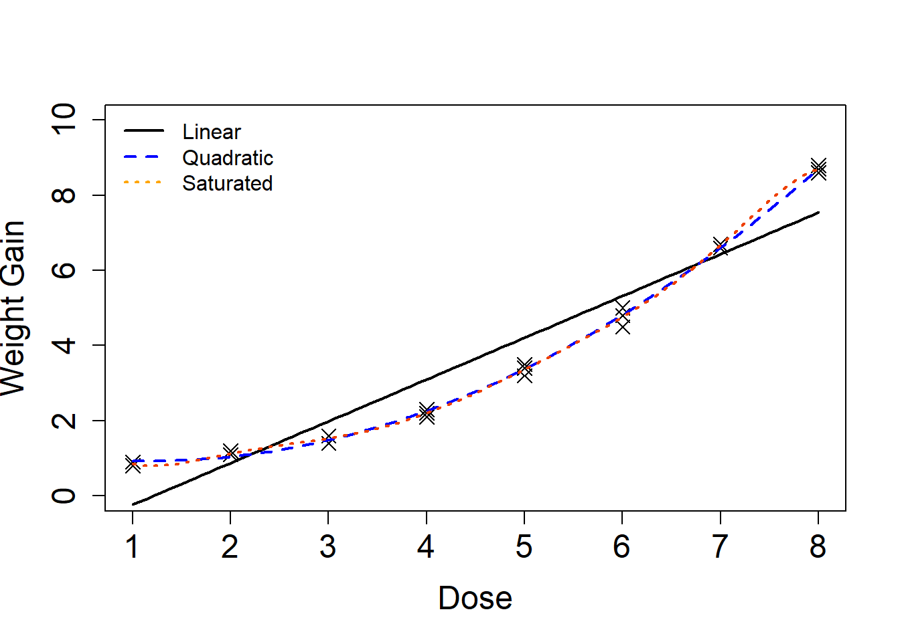

This page is part of the University of Colorado-Anschutz Medical Campus’ BIOS 6618 Recitation collection. To view other questions, you can view the BIOS 6618 Recitation collection page or use the search bar to look for keywords.
Estimating Pure Error
When we fit a regression model, we know that two factors contribute to the inflation of our sums of square due to error (SSE):
The true variability in our outcome, \(Y\) (pure error)
Error due to fitting an incorrect/suboptimal model (lack of fit error)
Oftentimes, we are unable to partition our error into its respective components (pure vs. lack of fit). However, if we have replicates (i.e., more than 1 measure) at each measure of our predictor, we are able to determine what the effect of lack of fit error is and to potentially identify a better model (e.g., should I add higher order polynomial(s) to my model?).
One aspect not explicitly noted in the slides, you are able to apply this method to decomposing the error for data that does not have replicates for every level of \(X\). However, the approach is more powerful when we have an increasing number of values of \(X\) with replicates.
To illustrate this point, let’s consider the equally spaced dose example with polynomial regression from the Polynomial Regression lecture:
Dose
Obs 1
Obs 2
Obs 3
1
0.9
0.9
0.8
2
1.1
1.1
1.2
3
1.6
1.6
1.4
4
2.3
2.1
2.2
5
3.5
3.4
3.2
6
5
4.5
4.8
7
6.6
6.7
6.7
8
8.7
8.6
8.8
Let’s create a data frame with this data (and bring back our ANOVA table function):
linreg_anova_func <-function(mod, ndigits=2, p_ndigits=3, format='kable'){### Function to create an ANOVA table linear regression results from lm or glm# mod: an object with the fitted model results# ndigits: number of digits to round to for most values, default is 2# p_digits: number of digits to round the p-value to, default is 3# format: desired format output (default is kable):## "kable" for kable table## "df" for data frame as table# extract outcome from the object produced by the glm or lm functionif( class(mod)[1] =='glm' ){ y <- mod$y }if( class(mod)[1] =='lm' ){ y <- mod$model[,1] # first column contains outcome data } ybar <-mean(y) yhat <-predict(mod) p <-length(mod$coefficients)-1 n <-length(y) ssm <-sum( (yhat-ybar)^2 ) sse <-sum( (y-yhat)^2 ) sst <-sum( (y-ybar)^2 ) msm <- ssm/p mse <- sse/(n-p-1) f_val <- msm/mse p_val <-pf(f_val, df1=p, df2=n-p-1, lower.tail=FALSE)# Create an ANOVA table to summarize all our results: p_digits <- (10^(-p_ndigits)) p_val_tab <-if(p_val<p_digits){paste0('<',p_digits)}else{round(p_val,p_ndigits)} anova_table <-data.frame( 'Source'=c('Model','Error','Total'),'Sums of Squares'=c(round(ssm,ndigits), round(sse,ndigits), round(sst,ndigits)),'Degrees of Freedom'=c(p, n-p-1, n-1),'Mean Square'=c(round(msm,ndigits), round(mse,ndigits),''),'F Value'=c(round(f_val,ndigits),'',''),'p-value'=c(p_val_tab,'',''))if( format =='kable' ){ library(kableExtra)kbl(anova_table, col.names=c('Source','Sums of Squares','Degrees of Freedom','Mean Square','F-value','p-value'), align='lccccc', escape=F) %>%kable_styling(bootstrap_options ="striped", full_width = F, position ="left") }else{ anova_table }}
First, let’s fit the simple linear regression model with just dose as a predictor and return its ANOVA table:
Code
# Fit linear modellm1 <-lm( wgtgain ~ dose, data=wtgain )linreg_anova_func(lm1)
Source
Sums of Squares
Degrees of Freedom
Mean Square
F-value
p-value
Model
155.67
1
155.67
238.27
<0.001
Error
14.37
22
0.65
Total
170.04
23
The MSE estimate from our SLR model is for the overall estimate of \(\sigma^{2}_{Y|X}\) (the true underlying variance of \(Y|X\)), and includes both the pure error and any error due to lack of fit.
Now let’s fit a model that adds a quadratic term and also return the ANOVA table:
Similar to our SLR, this model’s MSE is our overall estimate of \(\sigma^{2}_{Y|X}\) and still includes both pure and lack of fit error.
Finally, let’s fit a saturated model that we can use to isolate our estimate of the pure error contribution from the MSE of its output:
Code
# Fit saturated modellm_pure <-lm(wgtgain ~as.factor(dose), data=wtgain)linreg_anova_func(lm_pure)
Source
Sums of Squares
Degrees of Freedom
Mean Square
F-value
p-value
Model
169.78
7
24.25
1492.57
<0.001
Error
0.26
16
0.02
Total
170.04
23
The MSE from this model represents the pure error in our outcome \(Y\) after accounting for dose. We can see this because the saturated model can perfectly estimate the mean of each dose level for weight gain based on the given information:
where adding the intercept to any other coefficient matches its mean weight gain.
This saturated model can be used to conduct a lack of fit \(F\)-test, a special version of the partial \(F\)-test. In cases where we are considering polynomial models, this is a great test because we can fit the saturated model that represents:
and then evaluate reduced models that contain only lower level polynomials to evaluate which is optimal. Nicely, we can use the anova function to implement this test as we do with any other partial \(F\)-test.
Let’s start by determining if a model with only the linear predictor for dose is needed:
Code
# Test lack of fit for straight-line (linear) modelanova(lm_pure, lm1, test='F')
Analysis of Variance Table
Model 1: wgtgain ~ as.factor(dose)
Model 2: wgtgain ~ dose
Res.Df RSS Df Sum of Sq F Pr(>F)
1 16 0.260
2 22 14.373 -6 -14.113 144.75 4.995e-13 ***
---
Signif. codes: 0 '***' 0.001 '**' 0.01 '*' 0.05 '.' 0.1 ' ' 1
We see this matches our slide output (19 of 25) with \(F=144.75\) and \(p<0.001\). This indicates we would reject our null hypothesis that all higher order terms are equal to 0, therefore at least one higher order term would improve our model fit (i.e., \(H_0\colon \beta_{quadratic} = \beta_{cubic} = ... = \beta_{septic} = 0\) is rejected).
We could then evaluate if a model with a linear and quadratic predictor for dose improves the model fit:
Code
# Test lack of fit for second-order polynomial (i.e., quadratic) modelanova(lm_pure, lm2, test='F')
Analysis of Variance Table
Model 1: wgtgain ~ as.factor(dose)
Model 2: wgtgain ~ dose + dose2
Res.Df RSS Df Sum of Sq F Pr(>F)
1 16 0.26000
2 21 0.33954 -5 -0.079544 0.979 0.4602
This matches our slide output (20 of 25) as well, with \(F=0.979\) and \(p=0.460\). In this case, we would fail to reject the null hypothesis that removing the cubic through septic terms is beneficial above any beyond having the linear and quadratic predictors (i.e., \(H_0\colon \beta_{cubic} = ... = \beta_{septic} = 0\) is not rejected).
While our second-order model still has some lack of fit error, it is minimized to the extent that increasing the complexity by adding higher order terms is not significantly beneficial and this simpler model represents our “best fit”.
For closing, let’s visualize the three models to see their predicted fits:
Code
# fit saturated model so predict can be easily used:lm_sat <-lm( wgtgain ~ dose +I(dose^2)+I(dose^3)+I(dose^4)+I(dose^5)+I(dose^6)+I(dose^7), data=wtgain)x_val <-seq(1,8,length.out=100)x1 <-predict(lm1, newdata=data.frame(dose=x_val))x2 <-predict(lm2_alt, newdata=data.frame(dose=x_val)) xp <-predict(lm_sat, newdata=data.frame(dose=x_val)) plot(x=wtgain$dose, y=wtgain$wgtgain, xlab='Dose', ylab='Weight Gain', cex.lab=1.5, cex.axis=1.5, cex=1.5, ylim=c(0,10), pch=4)lines(x=x_val, y=x1, lwd=2)lines(x=x_val, y=x2, lwd=2, col='blue', lty=2)lines(x=x_val, y=xp, lwd=2, col='orangered2', lty=3)legend('topleft', bty='n', col=c('black','blue','orange'), lwd=c(2,2,2), lty=c(1,2,3), legend=c('Linear','Quadratic','Saturated'))

We see that the saturated model doesn’t vary much from the quadratic model, hence we can go with something a little less complicated that still approximates our pure error estimate well.
Source Code
---title: "Estimating Pure Error (Polynomials)"author: name: Alex Kaizer roles: "Instructor" affiliation: University of Colorado-Anschutz Medical Campustoc: truetoc_float: truetoc-location: leftformat: html: code-fold: show code-overflow: wrap code-tools: true---```{r, echo=F, message=F, warning=F}library(kableExtra)library(dplyr)```This page is part of the University of Colorado-Anschutz Medical Campus' [BIOS 6618 Recitation](/recitation/index.qmd) collection. To view other questions, you can view the [BIOS 6618 Recitation](/recitation/index.qmd) collection page or use the search bar to look for keywords.# Estimating Pure ErrorWhen we fit a regression model, we know that two factors contribute to the inflation of our sums of square due to error (SSE):1. The true variability in our outcome, $Y$ (**pure error**)2. Error due to fitting an incorrect/suboptimal model (**lack of fit error**)Oftentimes, we are unable to partition our error into its respective components (pure vs. lack of fit). However, if we have *replicates* (i.e., more than 1 measure) at each measure of our predictor, we are able to determine what the effect of *lack of fit* error is and to potentially identify a better model (e.g., should I add higher order polynomial(s) to my model?). One aspect not explicitly noted in the slides, you are able to apply this method to decomposing the error for data that does not have replicates for every level of $X$. However, the approach is more powerful when we have an increasing number of values of $X$ with replicates.To illustrate this point, let's consider the equally spaced dose example with polynomial regression from the Polynomial Regression lecture:| Dose | Obs 1 | Obs 2 | Obs 3 ||:----:|:-----:|:-----:|:-----:|| 1 | 0.9 | 0.9 | 0.8 || 2 | 1.1 | 1.1 | 1.2 || 3 | 1.6 | 1.6 | 1.4 || 4 | 2.3 | 2.1 | 2.2 || 5 | 3.5 | 3.4 | 3.2 || 6 | 5 | 4.5 | 4.8 || 7 | 6.6 | 6.7 | 6.7 || 8 | 8.7 | 8.6 | 8.8 |Let's create a data frame with this data (and bring back our ANOVA table function):```{r, class.source = 'fold-hide'}#| code-fold: true# Code to recreate figurewtgain <-data.frame( dose=rep(1:8, each=3), wgtgain=c(0.9,0.9,0.8,1.1,1.1,1.2,1.6,1.6,1.4,2.3,2.1,2.2,3.5,3.4,3.2,5,4.5,4.8,6.6,6.7,6.7,8.7,8.6,8.8) )plot(x=wtgain$dose, y=wtgain$wgtgain, xlab='Dose', ylab='Weight Gain', cex.lab=1.5, cex.axis=1.5, cex=1.5, ylim=c(0,10), pch=4)linreg_anova_func <-function(mod, ndigits=2, p_ndigits=3, format='kable'){### Function to create an ANOVA table linear regression results from lm or glm# mod: an object with the fitted model results# ndigits: number of digits to round to for most values, default is 2# p_digits: number of digits to round the p-value to, default is 3# format: desired format output (default is kable):## "kable" for kable table## "df" for data frame as table# extract outcome from the object produced by the glm or lm functionif( class(mod)[1] =='glm' ){ y <- mod$y }if( class(mod)[1] =='lm' ){ y <- mod$model[,1] # first column contains outcome data } ybar <-mean(y) yhat <-predict(mod) p <-length(mod$coefficients)-1 n <-length(y) ssm <-sum( (yhat-ybar)^2 ) sse <-sum( (y-yhat)^2 ) sst <-sum( (y-ybar)^2 ) msm <- ssm/p mse <- sse/(n-p-1) f_val <- msm/mse p_val <-pf(f_val, df1=p, df2=n-p-1, lower.tail=FALSE)# Create an ANOVA table to summarize all our results: p_digits <- (10^(-p_ndigits)) p_val_tab <-if(p_val<p_digits){paste0('<',p_digits)}else{round(p_val,p_ndigits)} anova_table <-data.frame( 'Source'=c('Model','Error','Total'),'Sums of Squares'=c(round(ssm,ndigits), round(sse,ndigits), round(sst,ndigits)),'Degrees of Freedom'=c(p, n-p-1, n-1),'Mean Square'=c(round(msm,ndigits), round(mse,ndigits),''),'F Value'=c(round(f_val,ndigits),'',''),'p-value'=c(p_val_tab,'',''))if( format =='kable' ){ library(kableExtra)kbl(anova_table, col.names=c('Source','Sums of Squares','Degrees of Freedom','Mean Square','F-value','p-value'), align='lccccc', escape=F) %>%kable_styling(bootstrap_options ="striped", full_width = F, position ="left") }else{ anova_table }}```First, let's fit the simple linear regression model with just dose as a predictor and return its ANOVA table:```{r}# Fit linear modellm1 <-lm( wgtgain ~ dose, data=wtgain )linreg_anova_func(lm1)```The MSE estimate from our SLR model is for the overall estimate of $\sigma^{2}_{Y|X}$ (the true underlying variance of $Y|X$), and includes both the pure error and any error due to lack of fit.Now let's fit a model that adds a quadratic term and also return the ANOVA table:```{r}# Fit quadratic modelwtgain$dose2 <- wtgain$dose^2# create variable for dose^2lm2 <-lm( wgtgain ~ dose + dose2, data=wtgain)lm2_alt <-lm( wgtgain ~ dose +I(dose^2), data=wtgain) #equivalent codinglinreg_anova_func(lm2)```Similar to our SLR, this model's MSE is our overall estimate of $\sigma^{2}_{Y|X}$ and still includes both pure and lack of fit error.Finally, let's fit a *saturated model* that we can use to isolate our estimate of the pure error contribution from the MSE of its output:```{r}# Fit saturated modellm_pure <-lm(wgtgain ~as.factor(dose), data=wtgain)linreg_anova_func(lm_pure)```The MSE from this model represents the pure error in our outcome $Y$ after accounting for dose. We can see this because the saturated model can perfectly estimate the mean of each dose level for weight gain based on the given information:```{r}doBy::summaryBy(wgtgain ~as.factor(dose), data=wtgain)coef(lm_pure)```where adding the intercept to any other coefficient matches its mean weight gain.This saturated model can be used to conduct a **lack of fit $F$-test**, a special version of the partial $F$-test. In cases where we are considering polynomial models, this is a great test because we can fit the saturated model that represents:$$ Y = \beta_0 + \beta_{linear} X + \beta_{quadratic} X^2 + \beta_{cubic} X^3 + \beta_{quartic} X^4 + \beta_{quintic} X^5 + \beta_{sextic} X^6 + \beta_{septic} X^7 + \epsilon; \text{ where } \epsilon \sim N(0,\sigma^{2}_{e}) $$and then evaluate reduced models that contain only lower level polynomials to evaluate which is optimal. Nicely, we can use the `anova` function to implement this test as we do with any other partial $F$-test.Let's start by determining if a model with only the linear predictor for dose is needed:```{r}# Test lack of fit for straight-line (linear) modelanova(lm_pure, lm1, test='F')```We see this matches our slide output (19 of 25) with $F=144.75$ and $p<0.001$. This indicates we would reject our null hypothesis that all higher order terms are equal to 0, therefore at least one higher order term would improve our model fit (i.e., $H_0\colon \beta_{quadratic} = \beta_{cubic} = ... = \beta_{septic} = 0$ is rejected).We could then evaluate if a model with a linear *and* quadratic predictor for dose improves the model fit:```{r}# Test lack of fit for second-order polynomial (i.e., quadratic) modelanova(lm_pure, lm2, test='F')```This matches our slide output (20 of 25) as well, with $F=0.979$ and $p=0.460$. In this case, we would fail to reject the null hypothesis that removing the cubic through septic terms is beneficial above any beyond having the linear and quadratic predictors (i.e., $H_0\colon \beta_{cubic} = ... = \beta_{septic} = 0$ is not rejected).While our second-order model still has some lack of fit error, it is minimized to the extent that increasing the complexity by adding higher order terms is not significantly beneficial and this simpler model represents our "best fit".For closing, let's visualize the three models to see their predicted fits:```{r, class.source = 'fold-hide'}#| code-fold: true# fit saturated model so predict can be easily used:lm_sat <-lm( wgtgain ~ dose +I(dose^2)+I(dose^3)+I(dose^4)+I(dose^5)+I(dose^6)+I(dose^7), data=wtgain)x_val <-seq(1,8,length.out=100)x1 <-predict(lm1, newdata=data.frame(dose=x_val))x2 <-predict(lm2_alt, newdata=data.frame(dose=x_val)) xp <-predict(lm_sat, newdata=data.frame(dose=x_val)) plot(x=wtgain$dose, y=wtgain$wgtgain, xlab='Dose', ylab='Weight Gain', cex.lab=1.5, cex.axis=1.5, cex=1.5, ylim=c(0,10), pch=4)lines(x=x_val, y=x1, lwd=2)lines(x=x_val, y=x2, lwd=2, col='blue', lty=2)lines(x=x_val, y=xp, lwd=2, col='orangered2', lty=3)legend('topleft', bty='n', col=c('black','blue','orange'), lwd=c(2,2,2), lty=c(1,2,3), legend=c('Linear','Quadratic','Saturated'))```We see that the saturated model doesn't vary much from the quadratic model, hence we can go with something a little less complicated that still approximates our pure error estimate well.